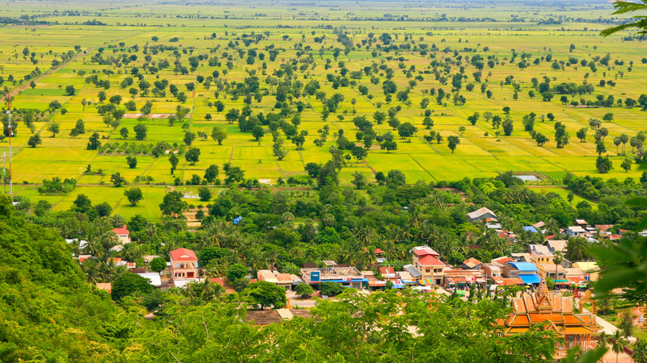

បាត់ដំបង គឺជាខេត្តធំទីពីរនៅក្នុងប្រទេសកម្ពុជា។ ជាទីក្រុងស្រស់ឆើតឆាយនៅអមតាមបណ្តោយដងស្ទឹងសង្កែ ដែលមានសំណង់រចនាបទផ្ទះសល់ពីសម័យអាណានិគមន៍បារាំង កំពុងបានក្លាយសម្បត្តិបេតិកភ័ណ្ឌជាតិ និងពិភពលោក ដែលកំពុងទទួលបានការចាប់អារម្មណ៍ខ្លាំងពីសំណាក់ភ្ញៀវទេសចរជាតិ និងអន្តរជាតិ។ បច្ចុប្បន្ននេះ ខេត្តបាត់ដំបងជាខេត្តដែលមានសក្តានុពលខ្លាំងទៅលើវិស័យកសិកម្ម ឧស្សាហកម្ម និងទេសចរណ៍ និងជាទីក្រុងស្អាតសម្រាប់ប្រកបអាជីវកម្ម និងគួរឱ្យចង់រស់នៅ។ ពីមួយថ្ងៃទៅមួយថ្ងៃកំណើនភ្ញៀវទេសចរជាតិ និងអន្តរជាតិជាច្រើនបានធ្វើដំណើរមកទស្សនាទឹកដីប្រវត្តិសាស្រ្តមួយនេះ ដែលអាចទស្សនាបាននូវបា្រសាទនានាជុំវិញខេត្ត និងទស្សនាភូមិទេសភាព។ នៅក្នុងនោះសេវាកម្មដ៍មានប្រជាប្រិយភាពខ្លាំងជាងគេគឺណូរី (Bamboo Train) និងសេវាកម្មទូកទេសចរណ៍ដែលអាចធ្វើដំណើរតភ្ជាប់ខេត្តបាត់ដំបង ទៅខេត្តសៀមរាបព្រមទាំងគយគន់មើលទេសភាពនានា ជាពិសេសភូមិលើទឹករបស់ប្រជាជននៅទីនោះបានផងដែរ។ បាត់ដំបងជាទីក្រុងស្អាតដ៍សំខាន់មួយដែលមានសម្រស់ស្អាតនៃសំណង់អាគារបុរាណនានា មានផ្សារដែលប្រមូលផ្តុំទៅដោយអាជីវករមកពីគ្រប់ទិសទី ព្រមទាំងមានសេវាកម្មនានាដូចជាសណ្ឋាគារ ផ្ទះសំណាក់ និងភោជនីដ្ឋានដែលរងចាំទទួលស្វាគមន៍ភ្ញៀវទេសចរជាតិ និងអន្តរជាតិ។ លើសពីនេះទៅទៀតភ្ញៀវទេសចរបរទេសជាច្រើនបានធ្វើដំណើរកំសាន្តនៅក្នុងព្រះរាជាណាចក្រកម្ពុជា ដោយចាប់ផ្តើមពីខេត្តសៀមរាបដែលមានប្រាសាទអង្គរវត្ត ខេត្តបាត់ដំបង និងភ្នំពេញ។ បច្ចុប្បន្ននេះ បាត់ដំបងគឺជាខេត្តគោលដៅទេសចរណ៍វប្បធម៌ ប្រវត្តិសាស្រ្ត និងធម្មជាតិ។
